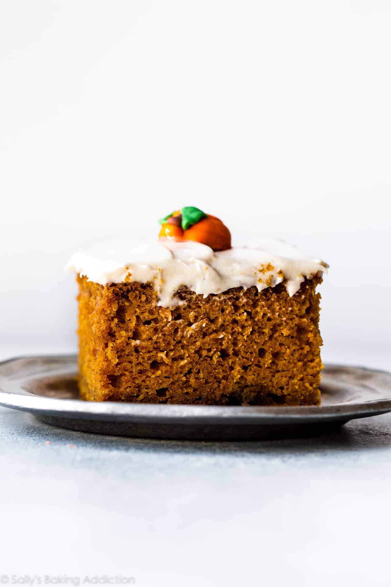

Pumpkin Cake

Flour
Pumpkin
Cinnamon + Pumpkin Pie Spice
Oil + Eggs
Sugar
Directions
- Preheat the oven to 350°F
- Whisk the flour, baking powder, baking soda, salt, cinnamon, and pumpkin pie spice together in a large bowl. Set aside. Whisk the oil, eggs, brown sugar, granulated sugar, pumpkin, and vanilla extract together until combined. Pour the wet ingredients into the dry ingredients and use a mixer or whisk until completely combined. Batter will be thick.
- Spread batter into the prepared pan. Bake for 30-36 minutes. Baking times vary, so keep an eye on yours. The cake is done when a toothpick inserted in the center comes out clean. If you find the top or edges of the cake is/are browning too quickly in the oven, loosely cover it with aluminum foil.